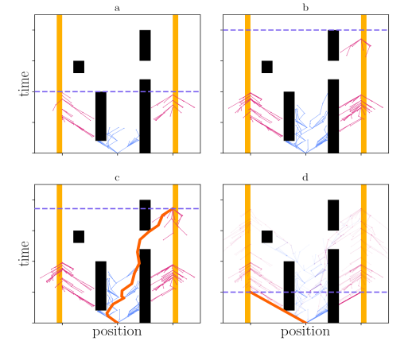
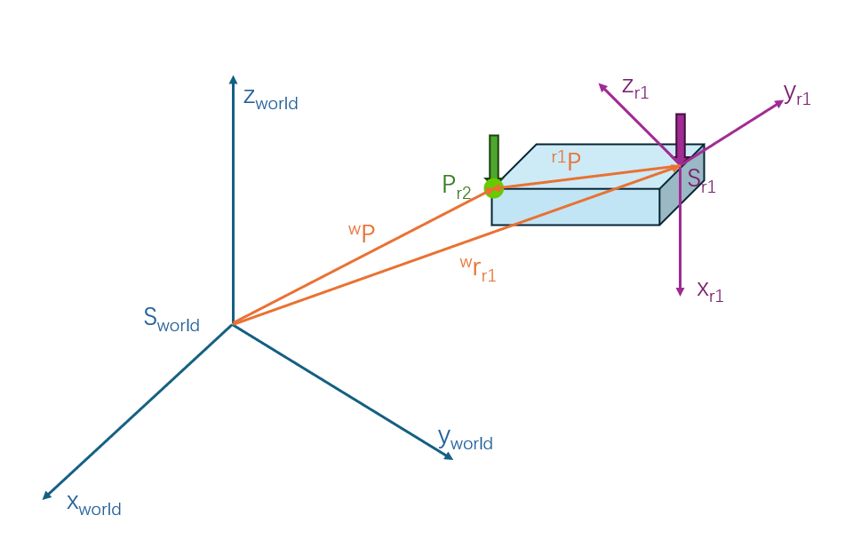

In the link below, you can find the code repository for this project: https://github.com/ThomassTon/irobman_lab
1. Introduction
In certain robotic applications, there are scenarios where a single robotic arm may struggle to perform tasks, such as handling a large object or a flexible item. In such cases, two or more robotic arms need to collaborate in order to accomplish the task efficiently.
In this work, we assume the use of two robotic arms working collaboratively to perform motion planning based on the given initial and target positions of the object to be grasped. Additionally, due to the limitations of the simulation framework, object grabbing is implemented through a linking framework rather than actual physical grasping. To test whether the motion planning algorithm can successfully avoid obstacles, we have also introduced a fixed obstacle for testing purposes.
2. Background
Motion planning is used for determining a feasible path or sequence of movements for a robot (or other agents) to achieve a specific task while avoiding obstacles and respecting constraints like joint limits, collision avoidance, and smoothness of the motion.
Motion planning can be broadly categorized into two types: optimization-based methods and sampling-based methods.
2.1 sampling-based motion planning
Sampling-based motion planning constructs feasible paths for a robot by randomly sampling points in the robot's configuration space (C-space) and connecting these points to form a valid path from the start to the goal, common approaches include RRT[1], RRT*[2], and Bi-RRT[3].
-
RRT incrementally builds a tree-like structure that explores the space by randomly sampling points and connecting them to the existing tree. Thereby finding a collision-free path. With a sufficient number of samples, it's possible to find a path, though it may not necessarily be the optimal one.
-
RRT* is an optimized version of RRT. After a vertex has been connected to the cheapest neighbor, the neighbors are again examined. Neighbors are checked if being rewired to the newly added vertex will make their cost decrease. If the cost does indeed decrease, the neighbor is rewired to the newly added vertex.
-
Bi-RRT is an enhanced version of the RRT algorithm. Bi-RRT grows two trees simultaneously, i.e., One tree starts from the initial position of the robot, the other tree starts from the goal position.
2.2 optimization-based motion planning
Instead of searching for a path first (like in sampling-based methods), the optimization-based motion planning optimizes the motion directly by minimizing or maximizing a specific objective function, such as minimizing travel time, energy, or avoiding obstacles. Common optimization-based methods include KOMO, CHOMP and STOMP.
-
KOMO[4] means k-order markov optimization. KOMO is a way to formulate path optimization problems.
-
CHOMP (Covariant Hamiltonian Optimization for Motion Planning)[5] is a method for trajectory optimization invariant to reparametrization. CHOMP uses functional gradient techniques to iteratively improve the quality of an initial trajectory, optimizing a functional that trades off between a smoothness and an obstacle avoidance component.
-
STOMP[6] is a stochastic trajectory optimazation framework. The approach relies on generating nosiy trajectories to explore the space around an initial trajectory, which are then combined to produced an updated trajectory wit lower cost.
2.3 KOMO and ST-RRT*
In this project, we utilized two motion planning methods: one is the optimization-based KOMO, and the other is the sampling-based ST-RRT*[7].
2.3.1 KOMO
Newton methods for k-order Markov Optimization is a method used in decision-making where the current decision depends not just on the immediate previous state (as in a first-order Markov process) but on a sequence of previous states, up to k steps in the past:
\[\min_{x_{0:T}} \sum_{t=0}^{T} f_t(x_{t-k:t})^\top f_t(x_{t-k:t}) + \sum_{t,t'} k(t,t') x_t^\top x_{t'}\]
\[\text{s.t.} \quad \forall t : g_t(x_{t-k:t}) \leq 0, \quad h_t(x_{t-k:t}) = 0.\]
where \(x_{t-k:t} = (x_{t-k},..., x_{t-1}, x_{t})\) are \(k+1\) tuples of consecutive states. And the the term \(k(t,t^{'})\) is an optional kernel measuring the desired correlation between time steps \(t\) and \(t^{'}\), which we explored but in practice hardly used.
To compute the inverse kinematics of a robotic arm, we typically need to define the following parameters:
\[\begin{aligned} q &\in \mathbb{R}^n &\text{vector of joint angles (robot configuration)} \\ \dot{q} &\in \mathbb{R}^n &\text{vector of joint angular velocities} \\ \phi : q &\mapsto y \in \mathbb{R}^d &\text{feature (or forward kinematic)} \text{e.g. position} \in \mathbb{R}^3 \text{ or vector} \in \mathbb{R}^3 \\ J(q) &= \frac{\partial \phi}{\partial q} \in \mathbb{R}^{d \times n} &\text{Jacobian} \end{aligned}\]
To apply KOMO (K-order Markov Optimization) to inverse kinematics with \(k=2\):
\[\begin{aligned} J_{\text{pos}} &= \sum_{t=1}^{T} \| \mathbf{y}_t^{\text{desired}} - \mathbf{y}_t(\mathbf{q}_t) \|^2 &\text{Error of the end effector} \\ J_{\text{smooth}} &= \sum_{t=3}^{T} \left( \lambda_1 \| \theta_t - \theta_{t-1} \|^2 + \lambda_2 \| \theta_t - 2\theta_{t-1} + \theta_{t-2} \|^2 \right) &\text{Smoothness Constraint}\\ \end{aligned}\]
Specifically:
-
\(\lambda_{1}\) controls the first-order smoothness (to prevent excessive changes in joint angles between consecutive time steps).
-
\(\lambda_{2}\) controls second-order smoothness (to avoid abrupt changes in acceleration or angular velocity).
-
\(\theta_{t} - 2\theta_{t-1} + \theta_{t-2}\) approximately describes the change in acceleration of the joint angles.
The final total cost function is:
\[\begin{aligned} J &= J_{pos} + J_{smooth} + \text{other constraint terms} \end{aligned}\]
We need to minimize this objective function \(J\), .i.e,
\[\min_{\theta_{t}, \theta_{t-1}, \theta_{t-2}} J\]
In this work, KOMO will be primarily used in three areas: calculating inverse kinematics, smoothing the path, and generating the optimal path.
2.3.2 ST-RRT*
ST-RRT* is an advanced motion planning algorithm specifically designed for dynamic environments, where both spatial and temporal dimensions need to be considered. Its primary goal is to find paths that satisfy velocity constraints while minimizing arrival time.
Unlike traditional methods that only plan in a configuration space (Q), ST-RRT* adds a time dimension, forming a space-time state space denoted as \(X = Q \times T\), where \(Q\) represents the configuration space and \(T\) represents the time dimension.
ST-RRT* builds on the dual-tree RRT-Connect framework but introduces several key modifications to handle unbounded time spaces and optimize arrival time:
-
Progressive Goal Region Expansion: ST-RRT uses a progressive expansion strategy that gradually increases the sampled time range while ensuring sufficient sample density through batch sampling. The initial time range B.timeRange and batch size B.batchSize* are set. As the algorithm progresses, the time range is expanded by a factor (P.rangeFactor) to include a larger time horizon, allowing the planner to explore more of the time dimension.
-
Conditional Sampling: Only the intersection of start and goal velocity cones is sampled. This greatly improves efficiency by reducing unnecessary exploration of infeasible areas.
-
Simplified Rewiring: Like RRT*, ST-RRT* optimizes paths by rewiring nodes in the tree. After extending the tree with a new node x_new, the goal tree is rewired to ensure that the path to the goal minimizes arrival time.
As shown in the figure below, the orange area represents the goal region, and the blue dashed line is an initial estimate of the feasible goal time: - (a) Using the initial batch of samples, no solution was found. - (b) The upper bound of the time space (represented by the dashed line) is expanded, allowing more goal nodes to be sampled, and both trees continue to grow. - (c) An initial solution is found (shown in orange), and the upper time bound is reduced accordingly. - (d) Tree branches that can no longer contribute to an improved solution are pruned (shown with lower opacity), leading to the final solution after convergence.

3. Implementation
In this section, we will introduce how to achieve dual-arm collaborative object transportation. It can be divided into three main steps: scene setup, task planning, and motion planning.
3.1 Scene Setup
Here, we will set the initial position and target location of the object to be grasped, as well as the fixed positions of any obstacles. Additionally, the positions of the two robots need to be defined. Typically, the robots are placed at a slightly greater distance from each other to prevent collisions while grasping the same object.
In this case, the first three elements of Q represent the displacement coordinates along the x, y, and z axes, while the last four elements represent the rotation angles using quaternions. Additionally, setting contact to 1 enables collision detection.
_obstacle (bin1){ type:ssBox, size:[0.2 0.2 0.1 .01], contact:1 Q:<[ -0, 0, 0.5, 1, 0, .0, 0]> color:[0.9, 0.9, 0.9, 1]}
goal1 (bin1){ joint:rigid type:ssBox, size:[0.1 0.1 0.1 .01], contact:0 Q:<[ 0, 0.0, 0.13, 1., 0., .0, 0]> color:[0.4, 1, 1, 0.2]}
goal2 (bin1){ joint:rigid type:ssBox, size:[0.1 0.1 0.1 .01], contact:0 Q:<[ 0, 0.0, 0.23, 1., 0., .0, 0]> color:[0.4, 1, 1, 0.2]}
obj2 (bin2){ joint:rigid type:ssBox, size:[0.1 0.1 0.1 .01], contact:1 Q:<[ -0., -0.15, 0.03, 1, 0, .0, 0]> color:[0.4, 1, 1, 1]}
obj1 (bin2){ joint:rigid type:ssBox, size:[0.1 0.1 0.1 .01], contact:1 Q:<[ -0., -0.01, 0.03, 1, 0, .0, 0]> color:[0.4, 1, 1, 1]}
3.2 Task Planning
Task planning refers to determin the sequence of high-level actions or tasks that a robot (or a group of robots) must perform to achieve a specific goal.
Common methods for Task Sequence Planning include Greedy Search, Random Search, and Simulated Annealing Search. Greedy search is a locally optimal strategy that, at each step, selects the best immediate option without considering future consequences. Random search generates task sequences randomly, evaluates their performance, and selects the best-performing sequence. It does not rely on selecting the best option at each step, instead exploring different combinations of task sequences randomly. Simulated annealing is inspired by the physical process of annealing in metallurgy, the algorithm initially allows the acceptance of worse solutions (higher “temperature”) to escape local optima. As the search progresses, the “temperature” is gradually lowered, and the algorithm becomes more likely to accept only better solutions, converging toward a global optimum.
However, in our work, there is no need for complex task planning. Instead, we directly use the sequence of objects as the task sequence. Here, a task represents the movement of a robotic arm from position A to position B. For example, moving the arm from the initial position to the position where it can grasp an object constitutes a task. The content of the task is determined by the joint configurations that correspond to the target positions of the robot's end effector. For example, if two objects need to be transported, this results in four tasks.
3.3 Motion Planning
To implement motion planning, the process is divided into three main steps. First, the robot's inverse kinematics are calculated based on the initial and target positions of the objects. Next, using the results from the inverse kinematics, the path for the first robot is planned, allowing it to approach and grasp the object. Finally, the path for the second robot is planned based on the trajectory of the first robot.
3.3.1 Calculating Inverse Kinematics
In this step, we use the KOMO optimizer to solve the inverse kinematics:
We can configure the optimizer using the skeleton framework: Number represents the timestep, 'SY_touch' indicates contact with the target, can be replaced with other types of constraints, such as SY_stable, which indicates being stationary relative to the target, 'pen_tip' represents the robot's end-effector, 'obj' represents the target. And at this stage, since we need to ensure that the two robots do not collide, we configure both robots simultaneously when setting up KOMO.
Additionally, we can use addObjective to add extra constraints, such as ensuring the distance between the end-effector and the object is zero, or enforcing that the end-effector remains perpendicular to the object's surface.
Skeleton S = {
{1., 1., SY_touch, {pen_tip_0, obj}},
{1., 1., SY_touch, {pen_tip_1, obj}},
{1., 2., SY_stable, {pen_tip_0, obj}},
{2., 2., SY_poseEq, {obj, goal}},
};
komo.setSkeleton(S);
komo.addObjective({1.,1.}, FS_distance, {obj, STRING(robots[0] << "pen_tip")}, OT_ineq, {1e1},{-0.0});
komo.addObjective({1.,1.}, FS_distance, {obj, STRING(robots[1] << "pen_tip")}, OT_ineq, {1e1},{-0.0});
3.3.2 Path planning and grasping for fisrt robot
Path planning is implemented using two methods: one based on the KOMO optimizer, and the other using ST-RRT*.
- The KOMO optimizer solves the problem by using the provided initial q0 and target positions q1, while setting velocity and acceleration constraints. In this work, the second-order KOMO is used, meaning we take both velocity and acceleration into account during the motion planning.
OptOptions options;
options.stopIters = 100; // Set the maximum number of iterations.
options.damping = 1e-3;
options.stopLineSteps = 5;
komo.setConfiguration(-2, q0); // By configuring KOMO for second-order optimization, it preserves position information from time step t-2 to t.
komo.setConfiguration(-1, q0);
komo.setConfiguration(0, q0);
komo.add_collision(true, .001, 1e1); //set collision detection
komo.addObjective({1}, FS_qItself, {}, OT_eq, {1e2}, q1); // set goal position q1
komo.addObjective({0.95, 1.0}, FS_qItself, {}, OT_eq, {1e1}, {},1); // speed slow at end
komo.addObjective({0.95, 1.0}, FS_qItself, {}, OT_eq, {1e1}, {}, 2); // acceleration slow at end
komo.run(options);
// get the path from KOMO
arr path(ts.N, q0.N);
for (uint j = 0; j < ts.N; ++j) {
path[j] = komo.getPath_q(j);
};
-
The ST-RRT* path planner generates the path based on the initial and target positions provided by the KOMO optimizer. As shown in the pseudocode, ST-RRT* performs bidirectional random sampling in the configuration space based on the start position \(q_{start}\) and the goal position \(q_{goal}\), connecting paths and progressively expanding the search region to obtain a time-optimal, collision-free path.

-
In addition, we need to consider the time synchronization between the two robotic arms. When planning the next task, the maximum completion time of the two arms from the previous task should be used as the starting time for the next task to ensure synchronization.
\[t_{start_{task+1}} = max(t_{end_{task}}^{robot1}, t_{end_{task}}^{robot2}) + 1\]
- For grasping, because the simulation framework defines object connections based on a tree structure where each node can only have one parent and one child, this restricts each object to being linked to only one end-effector at a time. Therefore, the object grasping is only handled by the first robot.
auto to = CPlanner[obj];
auto from = CPlanner["pen_tip"]; //end effector
to->unLink();
to->linkFrom(from, true);
3.3.3 Path planning for second robot

At this stage, we first need to calculate the relative positions \(^{r1}P\) of the two end-effectors during object grasping, based on the initial states of both robots generated by KOMO.
\[^{r_1}P = -^{w}r_{r_1} + ^{r_1}R_{w}\ ^{w}P\]
Subsequently, based on the rotation matrix \(^{w}R_{r_1}\) and coordinates \(^{w}r_{r_1}\) of the end-effector from the path of the first robot, the coordinates \(^{w}P\) of the end-effector for the second robot can be determined, which are essentially the waypoints.
\[\begin{aligned} ^{w}P = ^{w}r_{r_1} + ^{w}R_{r_1}\ ^{r_1}P \end{aligned}\]
uint size_of_path = paths[sequence[0].first].back().path.N /7;
arr t_a1;
arr waypoints(0u,3); // buffer for waypoints
CPlanner.setJointState(paths[robot][0].path[-1]);
for(uint i = 0; i<size_of_path; i++){
auto r0 = paths[sequence[0].first][1].path[i];
auto t = paths[sequence[0].first].back().t(i);
CTest.setJointState(r0);
const auto pen_tip = STRING(sequence[0].first << "pen_tip");
auto p_0 = CTest[pen_tip]->getPosition();
auto rotationmatrix = CTest[pen_tip]->getRotationMatrix();
auto _goal_pose = get_trans_position(p_0,rotationmatrix,p_0_1);
waypoints.append(_goal_pose);
t_a1.append(t);
}
auto path_a1 = get_path_from_waypoints(CPlanner,robot, waypoints);
Once we have the waypoints for the second robot, we can use KOMO to generate a path that follows these waypoints.
auto get_path_from_waypoints(rai::Configuration &C, const std::string &robot, const arr waypoints) {
for(uint i=0; i<waypoints.d0;i++){ // add waypoints to frame
auto waypoint = STRING("waypoint"<<i);
C.addFrame(waypoint);
arr size;
size.append(0.1);
C.getFrame(waypoint)->setShape(rai::ShapeType::ST_marker,size);
C.getFrame(waypoint)->setPosition(waypoints[i]);
}
setActive(C, robot);
const auto home = C.getJointState();
OptOptions options;
options.stopIters = 100;
options.damping = 1e-3;
KOMO komo;
komo.verbose = 0;
komo.setModel(C, true);
komo.setDiscreteOpt(waypoints.d0);
for(uint i=0; i<waypoints.d0;i++){ // add the waypoints to komo
auto waypoint = STRING("waypoint"<<i);
komo.addObjective({double(i+1)},FS_positionDiff,{STRING(robot << "pen_tip"), waypoint},OT_eq,{1e1});
}
arr q;
komo.run_prepare(0.0, true);
komo.run(options);
komo.optimize();
arr path(waypoints.d0, 7);
uint len_path = komo.getPath_q().d0;
for (uint j = 0; j < len_path; ++j) {
return path;
}
4. Result
During the testing phase, we created four scenarios: transporting a single object, transporting multiple objects, stacking and transporting objects, and obstacle avoidance. For each scenario, we applied both KOMO and ST-RRT* for motion planning.
From the table below, it can be seen that when both methods are able to find a valid path, KOMO consistently produces shorter paths than ST-RRT*. However, ST-RRT* is more versatile, as there are certain scenarios where KOMO fails to find a valid path.
Table1: Path Length Comparison
| Method | Task1 | Task2 | Task3 | Task4 |
|---|---|---|---|---|
| KOMO | 129 | 203 | 311 | 134 |
| ST-RRT* | 131 | 221 | 315 | 144 |
From the video, we can see that whether it's object transportation or stacking, the planner is able to successfully find efficient paths while avoiding obstacles. However, we also observed that in certain scenarios, only ST-RRT* could find a valid path, whereas KOMO could not.
Task1: Collaborative grasp of a box using KOMO
Task2: Collaborative grasp of two boxes using KOMO
Task3: Collaborative stacking three boxes using KOMO
Task4: Collaborative grasp of a box while avoiding obstacles using KOMO
Task1: Collaborative grasp of a box using ST-RRT*
5. Conclusion
Here, we summarize the content of the current work and some of its limitations. Additionally, we outline potential future directions closely related to this research.
5.1 Summary
To coordinate the motion planning, we first plan the movement of the first arm and save its waypoints. Then, based on the relative transformation between the two end-effectors, we generate the waypoints for the second arm and use KOMO to follow these waypoints. We designed various test scenarios for this approach, such as object transportation, stacking, and obstacle avoidance, all of which were successfully executed. For path planning, we compared two methods: KOMO and ST-RRT*. Our comparison revealed some differences between their characteristics. In general, KOMO tends to produce shorter paths, but its applicability is not as robust as ST-RRT*, as there are cases where KOMO fails to find a valid path.
5.2 Limitations and future works
-
Since the grasping in the simulation environment is based on a link framework, real grasping was not implemented. As a result, the second end-effector tends to rotate relative to the object during movement. In the future, additional constraints can be applied to the second end-effector, and real grasping can be achieved through integration with a perception module.
-
Currently, the path planning approach involves first planning the path for the first robot arm and then using this path to plan the path for the second robot arm. This method has limitations in obstacle avoidance, as it does not consider the task space of both arms simultaneously. Future work could explore simultaneous path planning for both robot arms to enable more flexible and effective operations.
References
[1] LaValle S. Rapidly-exploring random trees: A new tool for path planning[J]. Research Report 9811, 1998.
[2] Karaman S, Frazzoli E. Sampling-based algorithms for optimal motion planning[J]. The international journal of robotics research, 2011, 30(7): 846-894.
[3] LaValle S M, Kuffner Jr J J. Randomized kinodynamic planning[J]. The international journal of robotics research, 2001, 20(5): 378-400.
[4] Toussaint M. Newton methods for k-order markov constrained motion problems[J]. arXiv preprint arXiv:1407.0414, 2014.
[5] Zucker M, Ratliff N, Dragan A D, et al. Chomp: Covariant hamiltonian optimization for motion planning[J]. The International journal of robotics research, 2013, 32(9-10): 1164-1193.
[6] Kalakrishnan M, Chitta S, Theodorou E, et al. STOMP: Stochastic trajectory optimization for motion planning[C]//2011 IEEE international conference on robotics and automation. IEEE, 2011: 4569-4574.
[7] Grothe F, Hartmann V N, Orthey A, et al. St-rrt*: Asymptotically-optimal bidirectional motion planning through space-time[C]//2022 International Conference on Robotics and Automation (ICRA). IEEE, 2022: 3314-3320.